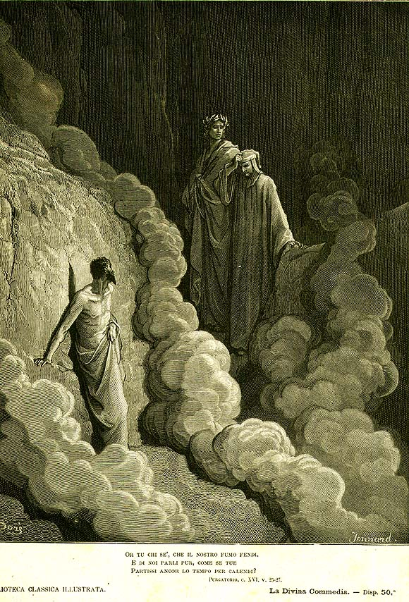

Песнь 16 из 33
Круг 3: Гнев. Свобода воли

Кратко
Третий уступ застилает густой, чёрный, едкий дым — слепота и удушье гнева; души поют «Agnus Dei». В дыму Данте беседует с Марко Ломбардо, и тот произносит одну из центральных речей поэмы: мир лежит во зле не по вине звёзд, а потому, что люди злоупотребляют свободой воли. Будь всё предопределено светилами — рухнула бы всякая справедливость. Причину же всеобщего упадка Марко видит в смешении двух властей: Рим, где «два солнца» (папство и империя) должны были светить раздельно, погасил одно другим.
Главные моменты
- Чёрный дым как кара и образ ослепляющего гнева.
- Центральная речь о свободе воли: зло — от выбора человека, не от звёзд.
- «Два солнца» Рима: духовная и светская власть не должны смешиваться.
- Упадок нравов — вина людей, а не предопределения.
Значение
Идейное сердце поэмы: человек свободен и потому сам отвечает и за грех, и за спасение.